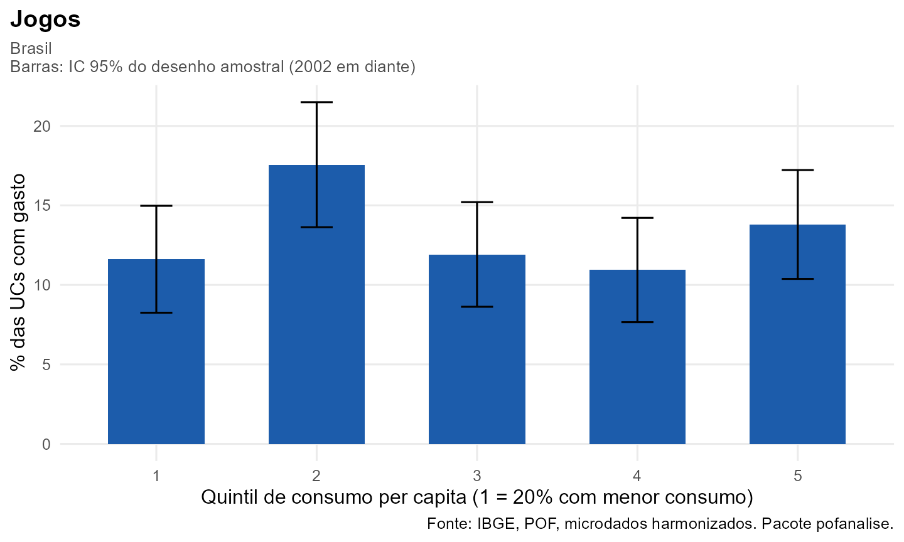

Este guia mostra como investigar qualquer item de despesa da POF nas cinco edições com quatro funções. Você informa o item, a medida e o corte; o pacote cuida do recorte comparável, do aluguel, dos quintis, do desenho amostral e do gráfico.
| Passo | Função | Você informa |
|---|---|---|
| 1. Achar o código | pof_buscar() |
um termo, como "celular"
|
| 2. Carregar | pof_carregar() |
edições e itens |
| 3. Descrever |
pof_analisar() + plot()
|
medida e corte |
| 4. Comparar e modelar |
pof_diferenca(), pof_modelo()
|
grupos ou fórmula |
Os blocos com microdados mostram o código para copiar. Os resultados
que rodam nesta página usam pof_exemplo(), uma base
sintética no mesmo formato, com um item chamado Jogos.
1. Achar o código do item
pof_buscar() procura o termo nos nomes das categorias e
nas descrições dos produtos originais de cada edição, sem diferenciar
acentos.
pof_buscar("aposta|loteria")
#> codigo nivel nome n1
#> 1 26101 folha Jogos e apostas 26. Despesas diversas
#> 2 26101 produto Jogos e apostas (DESPESAS COM JOGOS E APOSTAS) 26. Despesas diversas
#> 3 33202 produto Outros rendimentos (GANHOS DE JOGOS ... OU PREMIOS) 33. Outros rendimentosUm item pode ser uma folha (5 dígitos, "26101"), um
Nível 2 (3 dígitos, "172", telefonia e comunicações) ou um
Nível 1 (2 dígitos, "22", assistência à saúde), ou uma
combinação deles.
2. Carregar as edições com os itens
dados <- pof_carregar(
anos = c(1987, 1995, 2002, 2008, 2017),
dir = "HarmonizaPOF2026_data",
itens = list(apostas = "26101",
celular = c("17202", "24201"), # serviço + aparelho
refeicao = "16104",
saude = "22"))Cada edição vira uma base por unidade de consumo com uma coluna para
cada item, os grandes grupos (Alimentação,
Habitação…) e os cortes prontos: quintil,
sexo, idade, cor,
tamanho e rm.
3. Descrever o item
pof_analisar() calcula a medida em cada edição, com IC
de 95% quando há desenho amostral (2002 em diante).
-
medida = "prevalencia": % de UCs com gasto no item. -
medida = "participacao": % do item na despesa de consumo. -
medida = "gasto_medio": gasto mensal médio por UC. Os valores são nominais; compare só dentro da edição.
b <- pof_exemplo()
r <- pof_analisar(b, "Jogos", medida = "prevalencia", por = "quintil")
r
#> Item: Jogos | % das UCs com gasto
#> Recorte: Brasil | por quintil
#>
#> Edicao Grupo Estimativa IC_inf IC_sup N_UC
#> <char> <char> <num> <num> <num> <int>
#> 1: exemplo 1 11.61 8.25 14.98 381
#> 2: exemplo 2 17.56 13.63 21.49 401
#> 3: exemplo 3 11.91 8.62 15.21 420
#> 4: exemplo 4 10.94 7.65 14.22 397
#> 5: exemplo 5 13.80 10.38 17.22 401
plot(r)
Escolhas automáticas. Se houver 1987 ou 1995 entre
as edições, o recorte passa a ser o das regiões metropolitanas e o
aluguel sai do consumo, para que a comparação seja válida. As escolhas
ficam registradas no resultado (attr(r, "escolhas")) e no
subtítulo do gráfico. Para mudar: recorte = "brasil" e
sem_aluguel = FALSE.
pof_analisar(dados, "apostas") # série, RMs
pof_analisar(dados[3:5], "celular", medida = "participacao",
por = "quintil") # Brasil, 2002 em diante
plot(pof_analisar(dados, "refeicao", medida = "participacao", por = "quintil"))4. Comparar grupos e modelar
pof_diferenca() estima a diferença entre as categorias
de um corte e uma categoria de referência, com IC e p-valor, por
regressão com o desenho amostral.
pof_diferenca(b, "Jogos", por = "sexo", referencia = "Mulher")
#> Edicao Grupo Referencia Diferenca IC_inf IC_sup p_valor
#> <char> <char> <char> <num> <num> <num> <num>
#> 1: exemplo Homem Mulher 3.731821 0.5794399 6.884203 0.02043624pof_modelo() ajusta um modelo logístico para a chance de
ter gasto com o item (tipo = "prevalencia", resultados em
razão de chances) ou um modelo para o log do gasto entre quem gasta
(tipo = "gasto").
pof_modelo(b, "Jogos", ~ quintil + sexo + idade)
#> Edicao Termo Estimativa IC_inf IC_sup p_valor N_UC
#> <char> <char> <num> <num> <num> <num> <int>
#> 1: exemplo (Intercept) 0.1985342 0.1309907 0.3009058 1.346887e-13 2000
#> 2: exemplo quintil2 1.5851541 1.0474719 2.3988364 2.938681e-02 2000
#> 3: exemplo quintil3 1.0122452 0.6295852 1.6274849 9.598486e-01 2000
#> 4: exemplo quintil4 0.9032307 0.5589458 1.4595793 6.770354e-01 2000
#> 5: exemplo quintil5 1.1959656 0.7682834 1.8617267 4.271995e-01 2000
#> 6: exemplo sexoMulher 0.7360060 0.5580148 0.9707714 3.008960e-02 2000
#> 7: exemplo idade45 a 59 0.7000581 0.4834532 1.0137101 5.900334e-02 2000
#> 8: exemplo idade60 ou mais 0.7063891 0.4970014 1.0039922 5.264188e-02 2000
#> 9: exemplo idadeAté 29 0.7751603 0.5077390 1.1834300 2.374313e-01 2000Com os microdados de 2017-2018, por exemplo,
pof_modelo(dados["2017-2018"], "apostas", ~ quintil + sexo + cor)
estima a chance de gasto com jogos e apostas por quintil, sexo e cor da
pessoa de referência, controlando as demais.
Cuidados
- Comparar edições. Use o recorte das RMs com consumo sem aluguel (o padrão quando há 1987 ou 1995).
-
Itens raros. Em recortes pequenos (uma RM, um
quintil) o IC fica largo; confira
N_UCe a largura do intervalo antes de interpretar diferenças. -
Qualidade da harmonização. Confira a nota da folha
em
pof_harmonizacao()$folhasou no explorador. Folhas com qualidade média ou baixa podem estar ausentes em alguma edição. - 1987 e 1995 não têm desenho amostral: as estimativas saem sem IC.